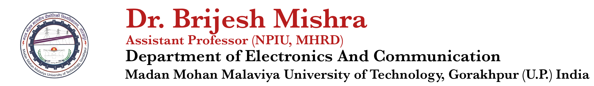

| Name | BRIJESH MISHRA |
|---|---|
| Category | General (UR) |
| Google scholar citations | 142 |
| Home page | https://sites.google.com/ |
| ORCID Id | https://orcid.org/0000-0002-2535-7159 |
| Father’s name | SHRI MAHENDRA MISHRA |
| Date of birth | 03.05.1988 |
| Marital Status | Married |
| Address (present) | Department of Electronics & Communication, Madan Mohan Malaviya University of Technology, Gorakhpur |
| Permanent Address | Vill-Itaura Satan, Post- Barohi Fatehpur, Dist-Azamgarh Pin-276121 |
| E-mail and Mobile | brijesh.mishra0933@gmail.com, bmec@mmmut.ac.in, brijeshmishra@ieee.org 7703004534, 9721881043 |
| Worked (June 2012-June 2013) | Assistant Professor in the Department of Electronics and Communication, SIET, Allahabad https://www.siet.in/ |
| Worked (Aug 2017-Sept 2018) | Assistant Professor in the Department of Electronics and Communication, SIET, Allahabad https://www.siet.in/ |
| Present (Sept 2018-present) | Assistant Professor (NPIU, MHRD on contract) in the Department of Electronics and Communication, Madan 2 Mohan Malaviya University of Technology, Gorakhpur http://www.mmmut.ac.in/view.aspx |
| 2010-2012 M. Tech. (Electronics Engineering) | (Honours) Department of Electronics and Communication, University of Allahabad, Allahabad-211002 |
| 2006-2010 B, Tech. (Electronics and Communication) | Uttar Pradesh Technical University (UPTU) |
| 2004 Intermediate | Nehru Inter College, Bichhiya Railway Colony, Gorakhpur, U.P. Board, Allahabad |
| 2002 High School | Nehru Inter College, Bichhiya Railway Colony, Gorakhpur, U.P. Board, Allahabad |
| Other Academic Achievements | Qualified GATE exam in 2010 |
| Teaching Experience | More than 4 years |